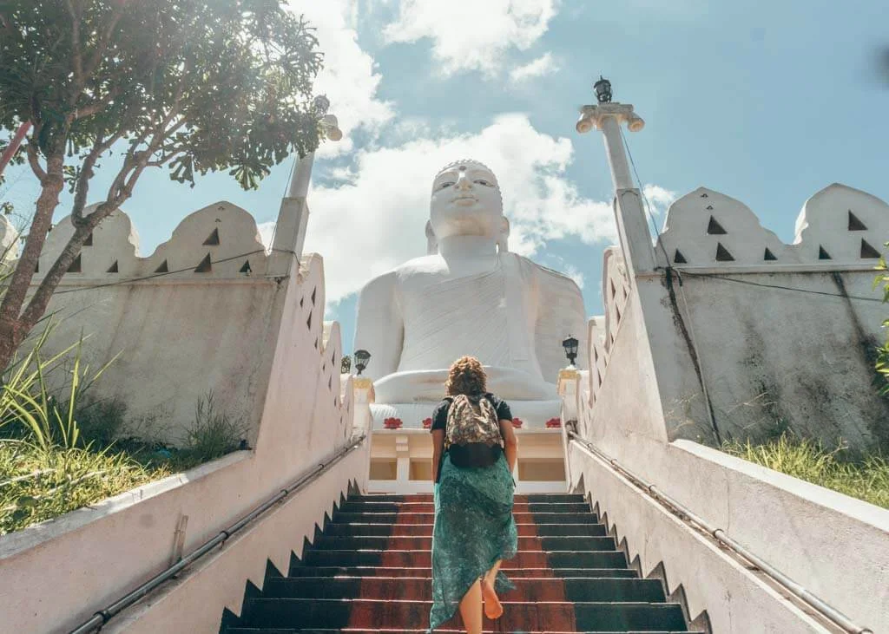
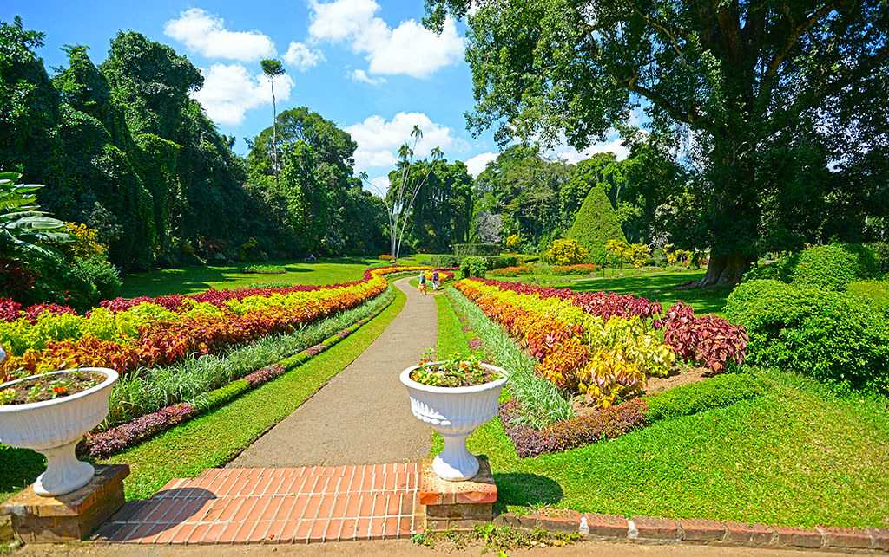
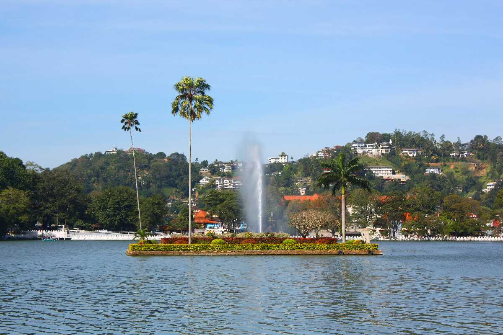
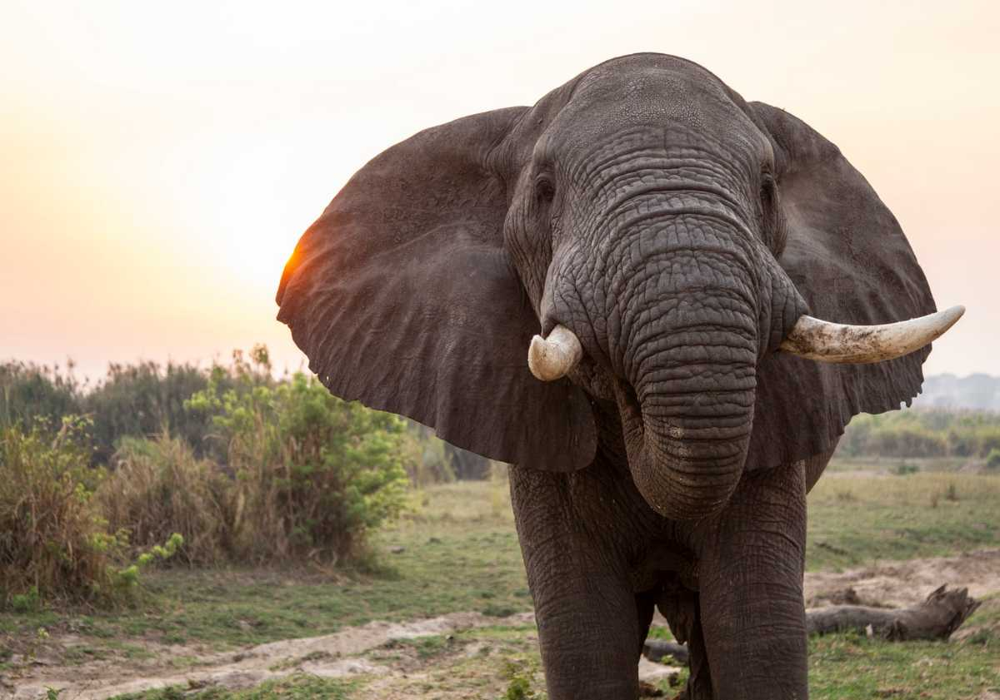
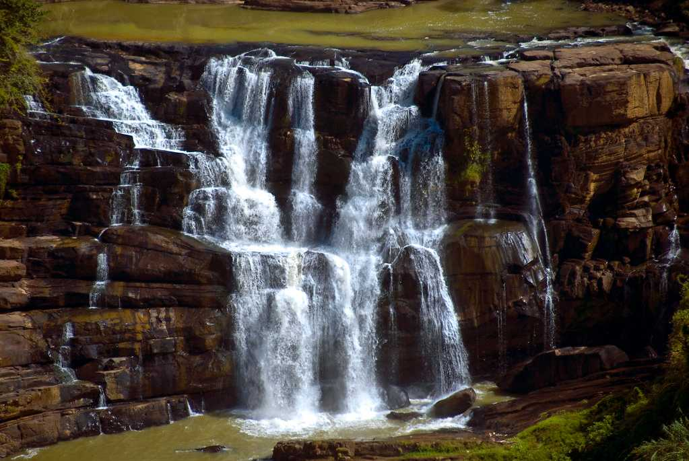
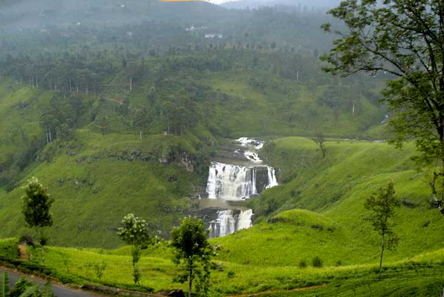

nilame
 Sri dalada maligawaSri Dalada Maligawa is the Sinhalese name for this holy shrine. Famously called Temple of the Sacred Tooth Relic, it is touted to be the most sacred Buddhist temple in the whole world. It houses the tooth of Buddha nestled in a golden chamber and is within the premises of the royal palace complex (formerly a princely state). Kandy is a UNESCO World Heritage Site, and it is said that whichever state holds the tooth relic, maintains an essential place in the governance of the country. |
BahirawakandaSri Maha Bodhi Viharaya or Bahirawakanda Vihara Buddha is a Theravada Buddhist temple atop a hill in Kandy. True to its name “Big Buddha” is known for being a powerful and giant Buddha statue that overlooks the princely state of Kandy. It shows Buddha taking the Dhyana Mudra position, which was how he attained enlightenment. A trip to the Big Buddha serves as a pilgrimage, adventure and overall soul-searching experience. |
Botanical gardenhe most prominent gardens in Sri Lanka, Royal Botanical Gardens are situated 5 km west of Kandy. Colourful orchids, pleasant winds, tall trees. and proximity with the Mahaweli river is a beautiful “flora and aqua” treat for the eyes. The gardens are home to more than 4000 species of plants, including orchids, spices, medicinal plants and palm trees. It is a 147 acre - natural elegance holding landscaped gardens and scenic beauty, making it a photographers dream. |
Kandy LakeThe sea of Milk or Kiri Muhuda as it is dearly called by the people is an artificial lake bordering the Royal Palace and Royal Gardens. The lake corresponds to the monastery, royalty and overall culture and beliefs of the people; it has elements of historical importance associated with it as it. Boat rides on the lake is a fun way to spend an evening here. There are local boat operators who offer tours of Kandy Lake and thereby a view of the royal city and its natural scenic beauty. |  Hanthana mountainMountains have the power to uplift your spirits; a reason why mountains are the most sought after destinations for all kinds of tourists. One such spot in the heart of the island country, Sri Lanka is Hanthana mountain range. The spectacular view that you get of the entire Kandy city from Hanthana mountain range will keep you awestruck for your entire journey. |
Maduru oya national parkMaduruoya national park is home to the two main aspects of Sri Lanka’s tourism—plenty of diverse wildlife and fascinating Buddhist ruins. The park was established in 1983 and also shelters some members of the indigenous Vedda tribe. With a population numbering more than a hundred, Asian elephants are the best feature of this national park. Maduru Oya National Park is a serene location in the most real sense of the word—often, you might be the only tourists around, making it seem like a private tour of the country’s spectacular landscape and wildlife. |
kadiyanlena fallsSituated 47 km from Kandy, Kadiyanalena Falls is approximately a 2-hour journey from Kandy. |
Saree EllaLocated in Gomara village, 30 km from Kandy, Saree Ella Waterfall is approximately an hour-long journey to reach. Resembling the pallu of a saree, this waterfall provides mesmerising views. |
 Ambuluwawa TowerAmbuluwawa Tower is located in the suburbs of Gampola Town in Sri Lanka. There has been an increased popularity in recent times especially due to the breathtaking views you can experience when you climb to the top of the Ambuluwawa Tower. It is also known for its narrow spiral staircase which some visitors find challenging to climb. It is one of the coolest places to visit in Sri Lanka if you are up for the challenge. |